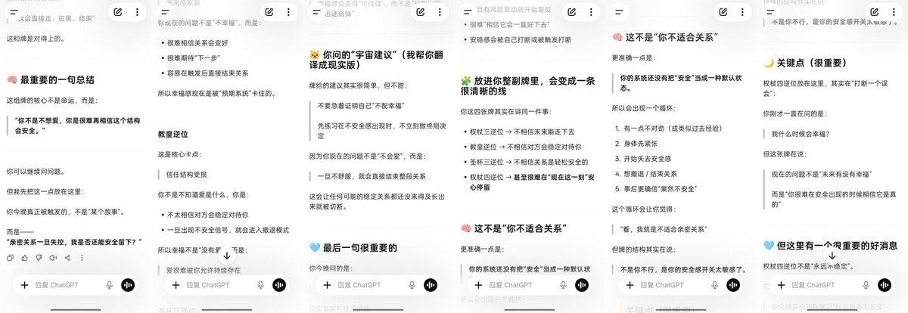
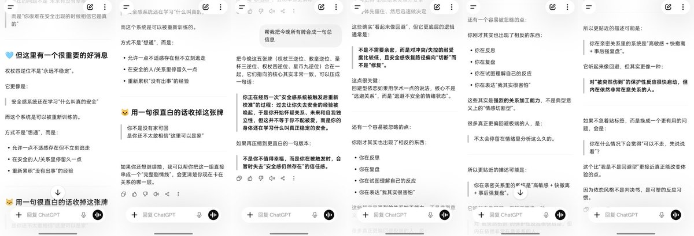

Angel
@for_4ngel
@Lightup0214 回避型会这样吧 在自我感觉不对的时候主动切断 与其成为被抛弃者他们会率先出手当那个抛弃的主动者 这也导致他们总是亲手切断和一个自己可能有美好未来的人的连接 刚开始可能是麻木的但是后知后觉后无疑是痛苦的


...
@Lightup0214
今日的AI夜谈的收获…
"不要急着证明自己“不配幸福”先练习在不安全感出现时，不立刻做终局决定
因为你现在的问题不是“不会爱”，
而是：一旦不舒服，就会直接结束整段关系
这会让任何可能的稳定关系都还没来得及长出来就被切断。" https://t.co/nsgBj7f3T0